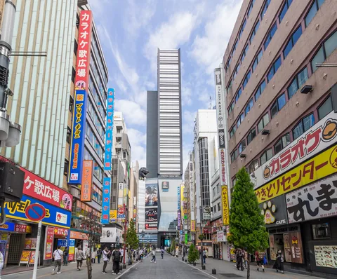
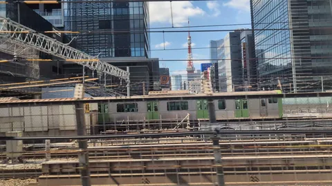
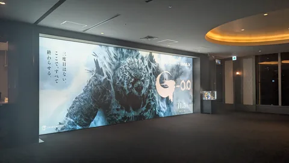

01 / 고질라·도쿄와 다마강
고질라의 도쿄를 걷다 거리에서 차창까지
거리에서 고질라를 올려다봤다면, 다음은 《신 고질라》의 다리로. 도시 산책을 차창 밖까지 이어가세요.
영화와 차창에서 마루코바시 비교 ↓
01 신주쿠
건물 위를 올려다보세요
가부키초 거리를 걷다 보면 간판이 늘어선 건물 너머로 고질라의 얼굴과 발톱이 보입니다. 신주쿠 도호 빌딩 8층에 있는 높이 약 12m의 고질라 헤드입니다.
사진을 찍을 때는 거리와 간판도 함께 담아 보세요. 사람과 건물이 함께 찍히면 고질라의 크기와 도시의 활기도 한 장에 담깁니다.
02 히비야
이번에는, 동상 발밑으로
히비야 고질라 스퀘어에서는 등지느러미부터 꼬리까지 바라볼 수 있습니다. 밤 조명에 떠오른 등지느러미와 울퉁불퉁한 피부가 신주쿠에서 올려다본 얼굴과는 또 다른 박력을 전합니다. 광장에 인접한 영화관에도 고질라 동상이 있습니다.


03 도쿄~시나가와
빌딩 사이로, 도쿄 타워

도쿄역을 출발해 시나가와로 향합니다. E석 쪽 빌딩 사이로 《고질라×모스라×메카고질라 도쿄 SOS》에서 열선을 맞은 붉고 흰 탑이 보입니다. 열차가 나아가면 탑은 다시 빌딩 뒤로 사라집니다.
도쿄 타워 차창 안내 →시나가와에 잠시 들르기
최초의 상륙 지점까지 걸어가기
초대 《고질라》(1954)에서 고질라가 처음 본토에 나타난 곳은 시나가와 야쓰야마바시 동쪽 끝 부근입니다. 스틸 사진에서는 입에 문 열차가 거대한 몸집을 강조합니다. 도카이도 신칸센과 도쿄 타워가 생기기 전의 도쿄입니다.
현재 다리는 1985년에 다시 놓은 4대째입니다. 신칸센은 시나가와를 지나 터널로 들어갑니다. 다리까지는JR 시나가와역에서 도보 약 9분, 게이큐 기타시나가와역에서 약 4분입니다.

04 다마강
다마강에, 그 푸른 아치 다리
《신 고질라》(2016)에서 자위대가 고질라에 맞서는 곳은 다마강입니다. 고질라 앞에 늘어선 아치가 마루코바시입니다. 신칸센 차창에서는 같은 다리를 다른 각도에서 볼 수 있습니다.
영화 속 마루코 다리

차창 밖 마루코바시

시나가와~신요코하마 E석 쪽
다마강을 건널 때 강 위에 이어진 아치를 찾아보세요.
여행 전후에2026년 11월 영화·전시
영화 《고질라-0.0》
2026년 11월 3일 일본 개봉.
고질라 엑스포 마이너스의 세계
2026년 11월 6~17일, 다이마루 도쿄점 11층. 일부 시간대는 지정 시간 입장제이며 캐리어 등 큰 짐은 반입할 수 없습니다.
전시 공식 안내 ↗
TM & © TOHO
자료 출처와 사진 크레딧
- 신주쿠 도호 빌딩 시설 안내
- 도쿄메트로 히비야역 출발 멜로디 안내
- 도호의 《고질라-1.0》 긴자 장면 소개
- 도쿄 로케이션 박스의 도쿄 타워 작품 안내
- 시나가와구 필름 커미션의 초대 고질라 상륙 지점 소개
- 시나가와 관광협회의 야쓰야마바시 안내
- 오타구의 덴엔초후 영화 관련 장소(PDF)
사진 촬영자와 영화 인용 출처는 각 사진에 표시했습니다. 본 페이지는 비공식 여행 기사입니다.